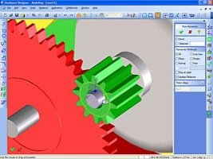

- Üretim
için gerekli tasarým faaliyetlerini kolaylaþtýran,
- Uzun
ömürlü ürünler üretmeniz için size gerekli elekronik desteði
veren,
- Mevcut
parçalarýn veya komplelerin yeniden kullanýlmasýna olanak
saðlayan,
- Oluþturulan
CAD dosyalarýnýn CAD kurulumu olmayan bilgisayarlarda da
görüntülenebildiði,
- Tasarýmýnýz
esnasýnda kolaylýkla deðiþik varyantlar oluþturabileceðiniz
komple
bir 3D CAD yazýlýmý olan Designer Modeling sayesinde artýk
ürün geliþtirme faaliyetleriniz çok kolaylaþýyor. Dinamik
modelleme günümüzde hem orjinal hem de en karýþýk ürünlerin
direkt tasarýmýnda en ileri teknolojiyi saðlamaktadýr.
Designer
Modeling 2006'da yeni ne var?
- Yeni
64-bit iþlemci desteði.
- Yeni
Çarpýþma (Clash) Analizi.
- Montaj
konumlarýný ve görünümlerini tanýmlamak için yeni 3 Boyutlu
Konfigürasyon (Configuration) özelliði.
- Daha
kolay montaj dolaþýmý için geliþtirilmiþ Yapý Tarayýcý (Structure
Browser).
- Eðimli
sürekli yüzeyler için geliþtirilmiþ Yüzey Ýþleme (Surfacing).
- Artýrýlmýþ
Modify 3D (3 boyutlu deðiþtirme) performansý
- Modify
3D'de geliþtirilmiþ özellik fark ediþ.
- Yeni
bir vida montaj iliþki tipi ile artýrýlan iliþkiler (Relations).
- Görsel
çizme/bulma/izleme (tracing) yetenekleriyle artýrýlmýþ Animasyon
(Animation).
- Geliþtirilmiþ
XVL ve eDrawings desteði.
- Sacdaki
týrnaklý birleþmelerin geliþtirilmiþ iþlenmesi.
- Dört
yeni özellik tipiyle geliþtirilmiþ Ýþleme (Machining) modülü.
- 2
boyutlu görünümler için yeni Çizim Sihirbazý (Drawing Wizard).
- Yeni
Anotasyon Yardýmcýsý (Annotation Copilot) dolaþýmý.
- Yeni
asosyatif kýrýk görünümler yeteneði.
- Sembol
oluþturma ve yeniden kullanma için yeni þablon Tarayýcý
(browser).
- Yeni
elips geometri komutu.
- Klikleyip
sürükleyerek kolay yeni konum deðiþtirme.
- Deðiþiklikler
süresince gerçek zamanlý görsel geribesleme için yeni kuþbakýþý
vurgulama.
- Tek
bir kesinti, kesit, veya detayý esas alan yeni genel baðýl
görünüm oluþumu.
- Ýsteðe
göre çoklu görünümleri güncelleyebilme.
- Yeni
3 Boyutlu Konfigürasyonlarý (3D Configurations) esas alan
patlatýlmýþ (exploded) görünümler.
- Önceden
ayrýlmýþ (split) geometri için yeni birleþtirme merge komutu.
- Sadece
iki týklamayla, yeni tek veya çift merkez çizgisi oluþturabilme
yeteneði.
- Yeni
çizim ve görünüm ayarlarý.
- Yeni
özellikler diyalog kutusu (dialog).
- Geliþtirilmiþ
varsayýlan ayarlar seçenekleri.
- Geliþtirilmiþ
kesit görünüm yönetimi.
Daha
fazla bilgi için: www.cocreate.com/designer_modeling.cfm
Designer
Drafting 2006'da yeni ne var?
- Daha
yüksek hýz ve kesinlik için geliþtirilmiþ CoPilot (yardýmcý
pilot).
- Daha
fazla CoPilot ayarý tanýmlamasý.
- Kuþ
bakýþý vurgulama.
- Eleman
modifikasyon olanaklarý.
- Yarýk
merkez hattý (tek veya çift) oluþturabilme yeteneði.
- Klasik
UI (Classic UI) için ilave deðiþiklikler.
Daha
fazla bilgi için: www.cocreate.com/designer_drafting.cfm
Model
Manager 2006'da yeni ne var?
- Kullanýcýlar
için yeni özellikler.
- Hafif
(Lightweight) Model desteði için yeni kaydet ve yükle yeteneði.
- Tek
týklamayla yükleme için yeni seçenek.
- Artýrýlmýþ
yükle ve kaydet performansý.
- Modeli
kopyalama yerine mevcut bir modelden hýzla yeni bir model
oluþturabilme yeteneði.
- Geliþtirilmiþ
parça listesi (BOM) Editör arayüzü ve kullanýlýrlýðý.
- Tek
veya çok kademeli BOM raporlarý oluþturmak için yeni BOM
rapor sihirbazý.
- Parça
sayýsý þemalarýný yeniden düzenlemek için yeni BOM pozisyon
sayýsý sihirbazý.
- Yük/yükle
kural desteðiyle artýrýlan anlýk fotoðraflama (Snapshot)
fonksiyonu.
- Otomatik
3D Saves'i de kapsayan Anotasyon (Annotation) çizimlerinin
geliþtirilmiþ yönetimi.
- Annotation
veya Designer Drafting de yeni 2 boyutlu çizimleri yükleme
yeteneði.
- Yeni
Drawing Manager Standalone versiyonu.
Daha
fazla bilgi için: www.cocreate.com/model_manager.cfm
 Ýrtibat: Ýrtibat:
Hakan
Iþýk
hakan.isik@3arti.com
3
Artý Bilgi Teknolojileri San. ve Tic. Ltd. Þti.
4. Cadde 19. Sokak No:18/1 06550 Yýldýz
06550 Çankaya Ankara
Tel: (312) 441 82 53
Faks: (312) 440 45 11
ww.3arti.com
|